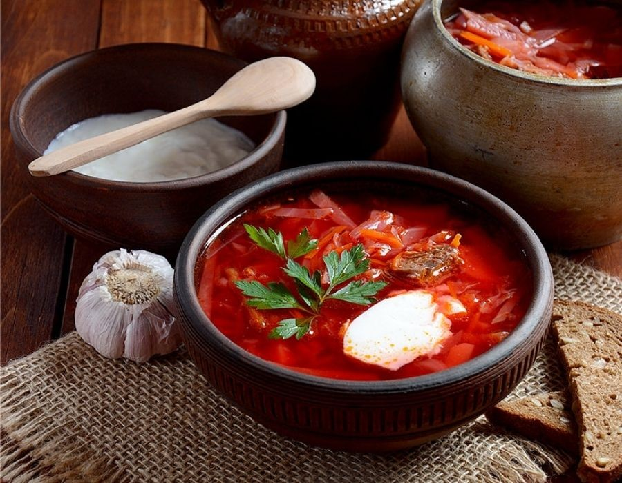

Про проєкт
«Смачна Хата» — це кулінарний сайт із добіркою перевірених домашніх рецептів, які легко повторити на власній кухні. Тут зібрані страви, що передавалися в родинах роками: перші страви, гарніри, випічка та святкові частування. Кожен рецепт супроводжується зрозумілим описом кроків, щоб навіть початківець зміг приготувати смачну страву з першого разу.
Ми віримо, що домашня їжа — це не лише про смак, а й про атмосферу за столом. Саме тому в добірці немає складних і надто екзотичних інгредієнтів: усе можна знайти в звичайному магазині поруч із домом. Головна мета проєкту — надихнути готувати частіше й ділитися стравами з близькими.
Для кого ці рецепти
Добірка створена для тих, хто любить готувати сам і цінує смак справжньої домашньої їжі: для молодих господинь, які тільки освоюють кухню, для зайнятих батьків, яким потрібні швидкі та ситні страви на щодень, а також для досвідчених кулінарів, які шукають нові ідеї серед класичних рецептів. Незалежно від рівня досвіду, кожен знайде тут щось смачне для своєї родини.
Смачна їжа починається не з дорогих продуктів, а з бажання приготувати щось для тих, кого любиш.

Дізнатися більше про традиції української кухні можна на сторінці про українську кухню у Вікіпедії.
А якщо цікаво, кому саме адресована ця добірка рецептів, перегляньте розділ «Для кого ці рецепти».